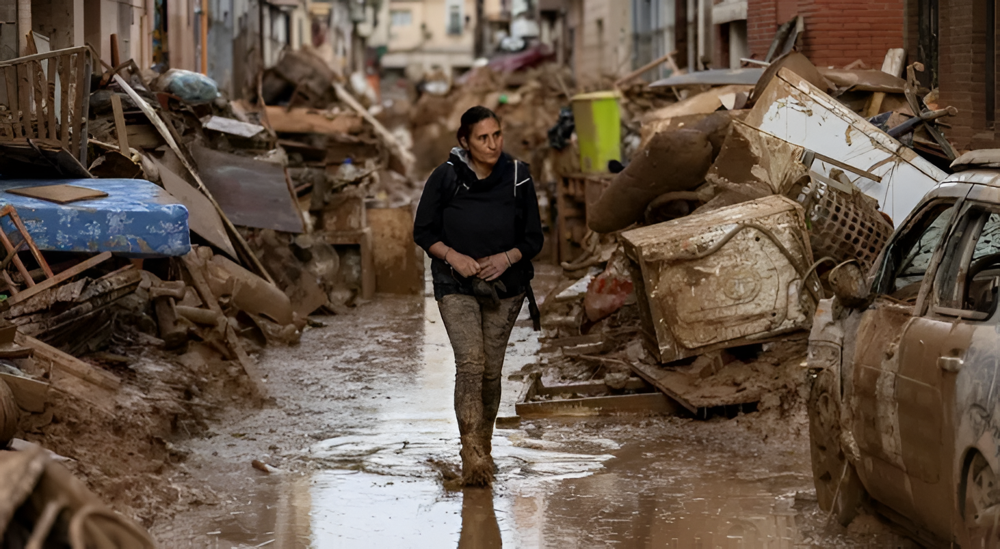
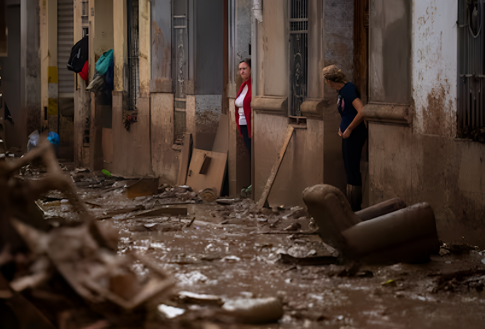
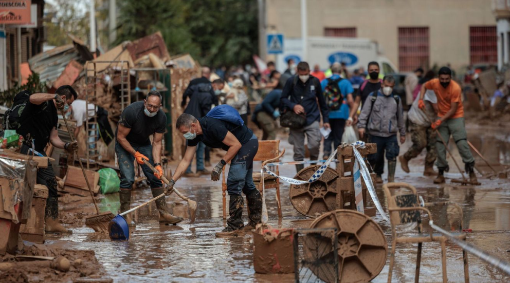
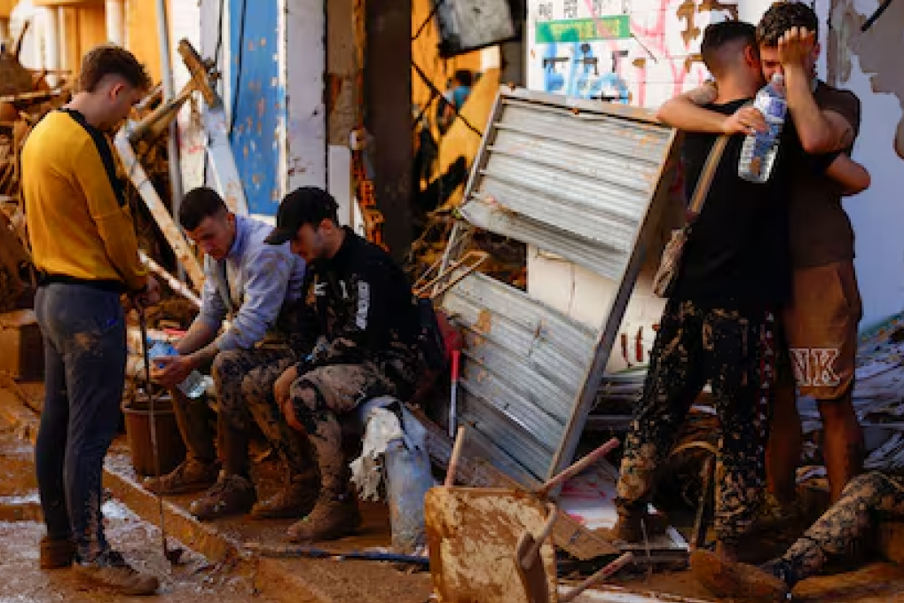
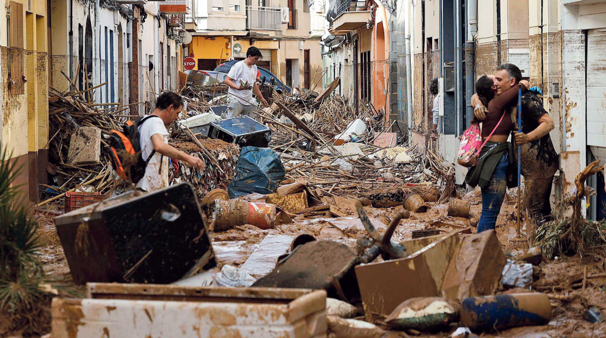

An Ordinary Day
The town carried on with its usual routine.
People went to work, to study, to run errands. The sky was grey, but no one imagined that the ground beneath their feet would soon disappear.

Alfafar, Zone 0
A journey through memory, mud, and resilience.
The town carried on with its usual routine.
People went to work, to study, to run errands. The sky was grey, but no one imagined that the ground beneath their feet would soon disappear.

Without warning. It wasn't rain falling from above, it was a tsunami coming from the ravine.
The alarms went off. Too late.
Everything began to float. Cars piled up like toys. The lights went out. The screams of neighbors were silenced by the roar of the water.
The morning after
Or, at least, those who could be counted.

No immediate help came from outside. But help came from next door.




A year later (Vision)
But the pain remains in memory. In the names that are no longer here. And even so, if everything breaks again, humanity will blossom once more.